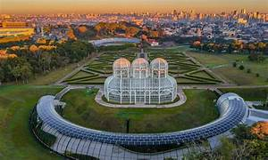
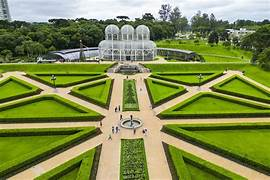
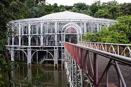
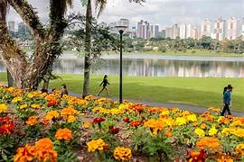
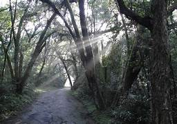
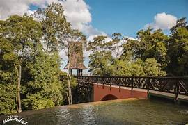
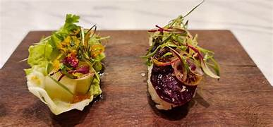
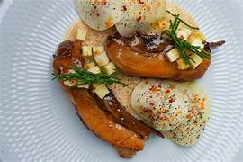
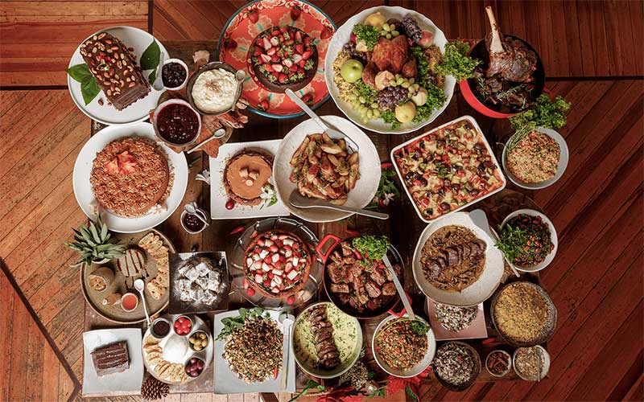

Curitiba é considerada uma das cidades mais sustentáveis da América Latina. A cidade ficou famosa mundialmente por seu sistema de transporte público inovador, grande quantidade de parques e políticas urbanas voltadas para qualidade de vida e preservação ambiental.


Jardim Botânico de Curitiba, um dos cartões-postais mais famosos da cidade.

Ópera de Arame, teatro construído com estrutura metálica em meio à natureza.


Parque Barigui, grande área verde com lago e trilhas.

Bosque Alemão, parque com trilhas ecológicas e vista da cidade.


Restaurante com foco em culinária orgânica e sustentável.

Cozinha local com ingredientes frescos e produtores regionais.